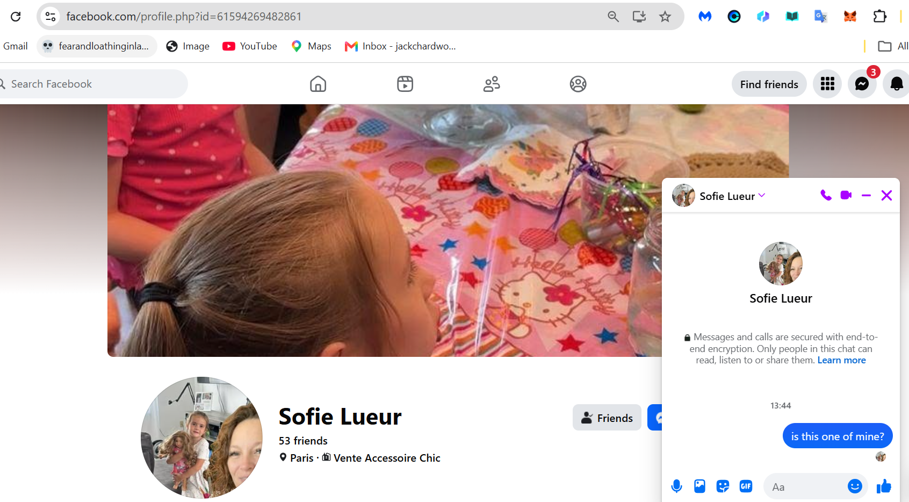

Possible children
- I expect people are going to help me with this en masse because everyone loves their mothers and would do anything for them (unless they're unduly abusive).
- The thought of these poor kids growing up and finding out what happened to their mother, what the people pretending to be parents had done to her or been OK about happening to her, is just heart-breaking.
Is she one of my children?
- She has my eyebrows.

Is this another?
- She also has my eyebrows.
- Are there 32 children of mine in the world?
